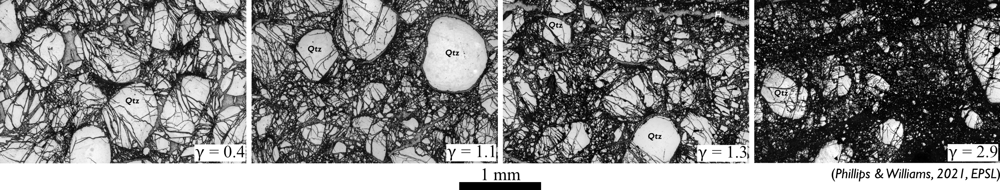
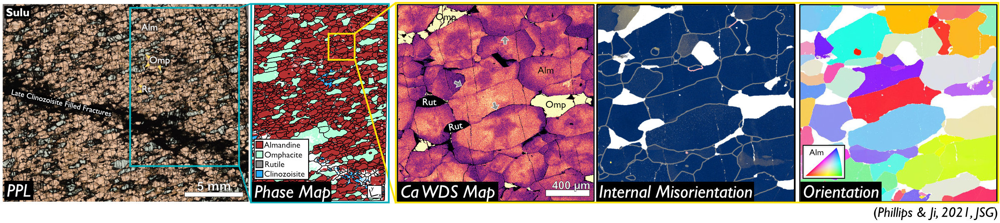
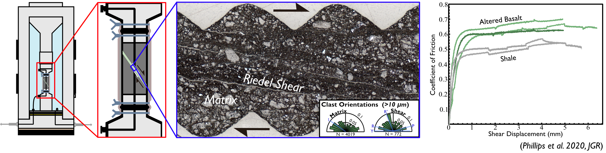

HOME |
|
RESEARCH |
|
TEACHING |
|
PUBLICATIONS |
Geology of Subduction Zone EarthquakesSubduction zone earthquakes are responsible for 90% of global seismic moment and 90-95% of the world's tsunamis. Through detailed geologic mapping and characterization of rocks from subduction zones, I aim to constrain the physical properties of the source region of subduction zone earthquakes and how rocks are physically changed during seismic events. |
Evolution of Fault Rock Properties with SlipComminution (grinding of rocks) and fluid-rock interactions cause the properties of fault rocks to evolve as faults slip. I work to quantify the evolution of fault rock properties with slip through microstructural analyses of natural and experimental fault rocks which have accommodated varying displacements. |
Deformation Mechanisms Across Pressure-Temperature SpaceHow minerals deform in nature is a complex function of intrinsic (e.g. mineral chemistry, grain size, grain shape) and extrinsic factors (e.g. temperature and pressure during deformation, imposed strain rate, and presence, composition, and activity of fluid phases). I aim to constrain how individual minerals deform across a large range of geologic conditions by carefully documenting deformation microstructures, constraining the conditions that produced them, and integrating them into global compilations of deformation microstructures. |
Experimental Deformation of Natural SamplesExperiments on natural samples provide valuable constraints on their strengths and mechanical response to imposed strains. I perform experiments on natural samples and carefully compare experimental microstructures to those observed in nature to constrain the strengths of natural faults and shear zones. |